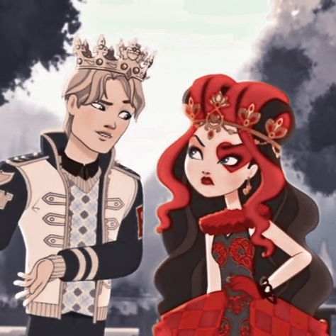
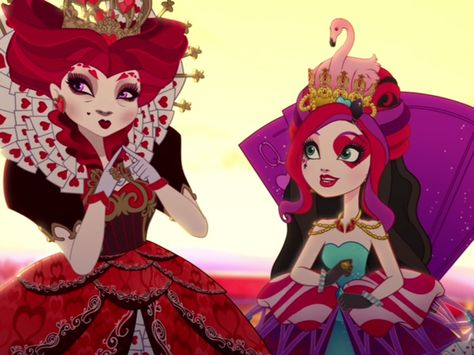
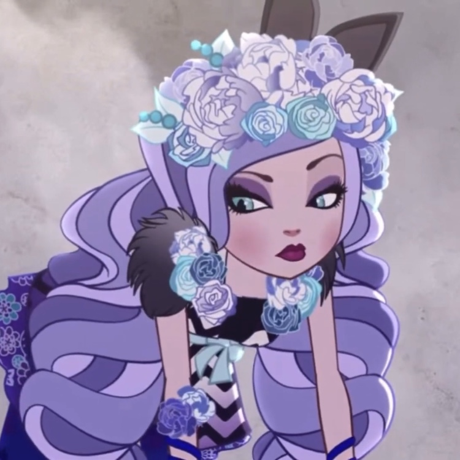

Зараз Ліззі мало хвилює стосунки з хлопчиками, тому що вона задумалася про це із поверненням до Країни Чудес. Але в неї все ж таки була закоханість: вона таємно зустрічалася з Дерінгом Чармінгом, після чого вони розлучилися. Кітті Чешир допомогла зрозуміти йому Ліззі, що Дерінг не любить її і те, що вона просто чергова принцеса, з якою хочеться пофліртувати.
Родина, сім'я: Мама Ліззі - Черв'яна Королева. Батько Ліззі також є Червовим Королем мініатюрного розміру.
Друзі: Найкращими подругами Ліззі Хартс є Кітті Чешир та Медделін Хеттер. У серії "Ліззі тасує колоду" вона грала в крокет разом із Блонді Локс та Еппл Уайт. Її друзі також є Банні Бланк та Алістер Вондерленд.
Спочатку була грубою і різкою у своїх висловлюваннях, які все сприймали буквально і через це Ліззі мали проблеми при спілкуванні з іншими людьми. Вона любила віддавати накази та командувати іншими людьми, оскільки її доля, як у майбутньому Червоної Королеви, має велике значення для її характеру та характеру поведінки. Незабаром друзі Ліззі почала дорікати їй у тому, що вона ставиться до них, як до підданих будов, як до друзів. Ліззі вирішила, що хоче бути добродушнішою і милішою, ніж її мати. Незважаючи на це, в ній залишилися такі лідерські якості, як сміливість та чуйність .
Ліззі може створити будь-що за допомогою карток. Вона може створювати копії речей за допомогою карток. Ліззі також може виконувати карткові фокуси, картковий телекінез і левітацію.